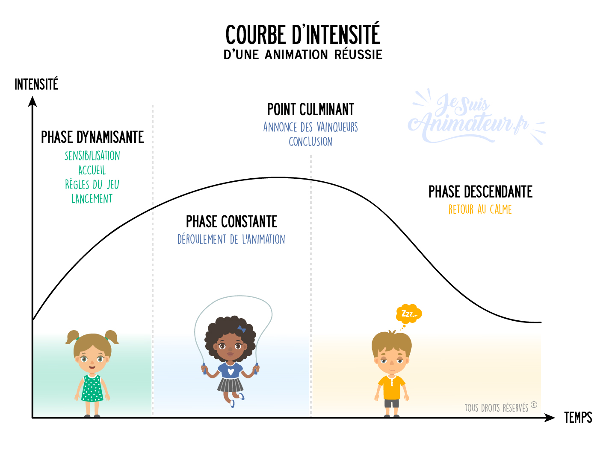

BAFA & BAFD
FORMATION
Accueil & organisation au début

O PSAADRASUFRA
- Objectifs
- Quels sont les buts précis de l’activité ou du projet ?
- Quels apprentissages, valeurs ou compétences souhaite-t-on développer ?
- Comment cette activité s’insère-t-elle dans le projet global du séjour ?
- Préparation
- Quels matériels, lieux, documents sont nécessaires ?
- Quelle organisation préalable est requise (réservations, autorisations) ?
- Quels rôles et responsabilités pour chaque animateur ?
- Sensibilisation
- Comment informer et motiver les jeunes avant l’activité ?
- Quels supports ou messages utiliser pour capter leur attention ?
- Y a-t-il des préjugés ou peurs à lever ?
- Aménagement
- Comment adapter l’espace et le matériel pour l’activité ?
- Faut-il prévoir des zones spécifiques pour différents groupes ou étapes ?
- Comment assurer l’accessibilité pour tous (handicap, âge, niveau) ?
- Accueil
- Comment accueillir les participants (rythme, ambiance, consignes) ?
- Comment présenter l’activité pour susciter l’intérêt et la confiance ?
- Comment gérer les éventuelles appréhensions ou réticences ?
- Déroulement
- Quelles sont les différentes étapes de l’activité ?
- Comment gérer le temps pour respecter le planning ?
- Comment adapter en cas d’imprévu (météo, matériel manquant, groupe difficile) ?
- Rythme
- Comment alterner moments calmes et temps d’action ?
- Quelle durée pour chaque phase pour maintenir l’attention ?
- Comment prévoir des pauses adaptées aux besoins des jeunes ?
- Animation
- Quelles techniques d’animation privilégier (jeux, discussions, mises en situation) ?
- Comment encourager la participation et la coopération ?
- Comment gérer les conflits ou difficultés relationnelles ?
- Sécurité / Urgence
- Quels sont les risques liés à l’activité ?
- Quelles mesures de sécurité mettre en place ?
- Qui est responsable en cas d’incident ?
- Comment réagir en situation d’urgence (contact secours, premiers soins) ?
- Animation (de nouveau)
- Comment maintenir la dynamique jusqu’à la fin ?
- Quelles stratégies pour relancer l’intérêt si baisse de motivation ?
- Comment encourager l’expression et le retour des participants ?
- Fin
- Comment clôturer l’activité de manière positive ?
- Prévoir un temps de bilan ou de débriefing collectif.
- Comment remercier et valoriser les participants ?
- Rangement
- Comment organiser le rangement du matériel et de l’espace ?
- Qui est responsable de cette phase ?
- Comment sensibiliser les jeunes à l’importance du rangement ?
- Analyse
- Quels points ont bien fonctionné ?
- Quelles difficultés ont été rencontrées ?
- Quelles améliorations envisager pour la prochaine fois ?
- Comment recueillir le retour des participants et des animateurs ?
Transports
- Brainstorming : À quoi pensez-vous en entendant « transport » ? (Bus, car, train, avion, vomi, ceinture...)
- À l’arrivée du car, vérifier l’état général (vitres, carrosserie, etc.). En cas de problème, prévenir le conducteur. La sécurité des enfants (et des animateurs !) est une priorité, votre responsabilité pénale est engagée. Vérifier aussi la présence de la trousse de secours et du gilet jaune au besoin. Regarder également l'état de santé du chauffeur, s'il est fatigué, ou ivre, il ne doit évidemment pas conduire -> refuser de faire monter les enfants.
- Organisation des bagages : qui met les valises dans le car ? Les jeunes ou les animateurs ? -> En fonction de tranche d'âge.
- Les enfants cherchent souvent la meilleure place et rangent leurs valises sans attention. Leur rappeler de faire attention ou laisser les animateurs s’en charger.
- Le chauffeur peut demander la liste des jeunes et le nombre d’enfants/animateurs présents.
- Que prennent les jeunes dans le bus ? Boissons, nourriture ? À adapter selon la durée du trajet. Pour une sortie piscine, rien à prendre ; pour un long trajet, prévoir eau et pique-nique si un arrêt est prévu.
- Placement dans le car : où s’installent les animateurs ? -> Doivent être répartis dans le car ! Éviter pour les jeunes le centre au fond, près des portes et les places sans fauteuils devant :ce sont des places déconseillé mais pas interdit. Strapontins par contre interdits.

- L’animateur au fond du bus remonte l’ensemble du groupe. Idéalement, les animateurs sont répartis partout.
- Avant de partir, vérifier que tout le monde a bien attaché sa ceinture de sécurité. C’est obligatoire et fondamental.
- En cas de mal des transports, placer les jeunes sujets à ce problème à l’avant et prévoir des sacs plastiques à garder sur sois !
- Attention à la hauteur de la marche lors de la montée et descente, surtout pour les enfants de moins de 10 ans. Toujours placer un animateur pour compter les enfants à la montée et à la descente.
- Toilettes dans le bus : les chauffeurs préfèrent souvent qu’on ne les utilise pas. Prévoir un passage aux toilettes avant le départ.
- Attention à la hauteur de la soute, les enfants peuvent se cogner.
- Organisation de la soute : selon la configuration du car, adapter la disposition des animateurs. Parfois les soutes communiquent, parfois non. Pour les petits, placer les valises à l’avant de la soute.
- Caler les bagages pour éviter qu’ils ne basculent en cas de freinage brusque.
- Des valises bien alignées donnent une bonne image du séjour. Des valises mal rangées donnent une mauvaise impression. (Cela fait parties des vitrines du séjour !)
- À l’approche de l’arrivée, réveiller les animateurs qui dorment.
- Avant de descendre, faire un point avec les animateurs et donner les consignes aux jeunes, car une fois dehors ils courent vers leurs parents.
- À l’arrivée, placer un animateur pour compter les enfants à la descente, un autre pour sortir les valises (surtout pour les petits), et un autre pour surveiller ceux qui partent et les noter.
- En fin de trajet, faire un tour du bus pour vérifier qu’aucune affaire ou enfant n’a été oublié. Dans les bus modernes, une alarme signale si un enfant est resté à bord.
- Compter systématiquement les enfants en montant et en descendant du bus.
Vie quotidienne
- Brainstorming : À quoi pensez-vous en entendant « vie quotidienne » ? (Petit-déj’, douches, linge, chambres, ménage, plannings, rangement, lessive, disputes, brossage de dents, pyjamas, chaussettes orphelines, “j’ai perdu mon maillot”, “j’aime pas la purée”, chaussettes qui sentent le fauve…)
- La vie quotidienne, c’est :
- Les moments hors activités “formelles” → lever, repas, toilette, rangement, coucher.
- Le lien fort avec la sécurité physique et affective des enfants.
- Un temps éducatif à part entière (autonomie, vivre-ensemble, règles de vie).
- L’image du séjour (parents, direction, enfants) se joue beaucoup là-dessus.
- Lever
- Se lever à l’heure… mais en douceur (éviter la trompette à 6h30 sauf thème militaire).
- Vérifier que tout le monde est réveillé (pas juste un “debout” lancé dans le couloir).
- Observer l’état de forme ou de fatigue des enfants : noter s’il y a fièvre, blessure, tristesse.
- Petit-déjeuner
- Vérifier que tout le monde mange quelque chose (même petit).
- Gérer les régimes alimentaires et allergies.
- Prévenir le gaspillage → petites quantités, resservice possible.
- Hygiène & toilette
- Organiser les passages aux sanitaires pour éviter l’effet “bouchon”.
- Contrôler discrètement brossage des dents, lavage des mains.
- Vérifier que tout le monde se douche au moins tous les deux jours (plus selon chaleur/activités).
- Prévoir un animateur référent pour accompagner les plus jeunes.
- Rangement & propreté
- Faire participer les enfants : pas d’animateur “bonne à tout faire”.
- Vérifier chambres/tentes : sécurité + hygiène.
- Mettre en place des défis ludiques (concours de chambre la plus propre).
- Contrôler les zones collectives.
- Gestion du linge
- Repérer les enfants qui ne changent jamais de t-shirt ou laissent traîner leur maillot mouillé.
- Prévoir des moments “lessive” ou aide au pliage.
- Gérer les objets trouvés avec une boîte dédiée et présentation régulière.
- Repas
- Placement réfléchi pour éviter les tables explosives.
- Répartir les animateurs dans la salle.
- Faire respecter un minimum de calme.
- Respecter régimes spécifiques et vérifier les repas adaptés.
- Sensibiliser au gaspillage et à la politesse.
- Coucher
- Anticiper : proposer un temps calme avant dodo.
- Vérifier que tout le monde est dans son lit.
- Rassurer les plus jeunes ou ceux en mal du pays.
- S’assurer que tout est calme avant de quitter le secteur.
- Rôle éducatif
- Autonomie : gérer ses affaires, son linge, son temps.
- Vivre-ensemble : respect des règles et des autres.
- Sécurité : hygiène, repas équilibrés, rythme de sommeil.
- Observation : détecter mal-être, problème de santé, conflit.
- Points de vigilance
- Toujours un animateur dans les lieux sensibles.
- S’adapter à l’âge des enfants.
- Être attentif aux signes d’isolement ou harcèlement.
- Surveiller les transitions, moments souvent chaotiques.
- Astuces
- Ludifier : concours, relais hygiène, missions.
- Communiquer avec l’équipe sur les responsabilités.
- Montrer l’exemple.
- Observer discrètement pour repérer un besoin d’aide.
DÉBATS 4 COINS :
Option avec 4 coins : rouge, bleu, jaune et verts : Tout à fait d’accord / Plutôt d’accord / Pas d’accord / Dépend de l'âge
🏠 Vie quotidienne / règles
- Les règles devraient être décidées uniquement par les animateurs.
- On devrait pouvoir choisir librement à quelle heure on se couche en colo.
- Les chambres devraient être mixtes si tout le monde est d'accord.
- Il faudrait que chacun range seulement ses affaires et pas les espaces communs.
🍽️ Repas / alimentation
- Tout le monde devrait pouvoir choisir son menu à chaque repas.
- Il est normal qu'il y ait des repas “découverte” pour goûter de nouveaux plats.
- Il faudrait pouvoir manger quand on veut et pas à des horaires fixes.
- Le gaspillage alimentaire devrait entraîner des sanctions.
🎨 Activités et liberté
- Les enfants devraient décider eux-mêmes du programme de la journée.
- Il devrait toujours y avoir des activités obligatoires.
- Il est normal d'avoir des temps calmes même si on préfère jouer.
- Les sorties à l'extérieur devraient être limitées pour la sécurité.
📱 Objets personnels / vie numérique
- Les téléphones portables devraient être autorisés tout le temps.
- Il est normal d'interdire certains objets personnels dans un centre.
- On devrait pouvoir prendre et publier des photos librement.
- Les animateurs devraient vérifier ce qu'on fait sur les réseaux sociaux.
👥 Vie en groupe / respect
- Il est normal de faire des corvées collectives même si on n'aime pas ça.
- Les plus âgés devraient avoir plus de responsabilités que les plus jeunes.
- Tout le monde devrait participer aux animations, même s'il est timide.
- Il faudrait toujours voter pour prendre les décisions du groupe.
Entretien individuels
En début de séjour
Milieu de séjour
Fin de séjour
Handicap
- Brainstorming : À quoi pensez-vous en entendant « handicap » ? (Fauteuil roulant, surdité, autisme, malvoyance, accompagnement, inclusion, accessibilité, patience, adaptation, communication alternative…)
- Le handicap, c’est :
- Une diversité de situations : moteur, sensoriel, intellectuel, psychique, troubles du spectre autistique, maladies chroniques…
- Des besoins spécifiques selon la personne, pas selon l’étiquette du handicap.
- Un droit à l’inclusion et à la participation à toutes les activités.
- Un travail d’équipe avec l’ensemble des animateurs, la direction et parfois des accompagnants spécialisés.
- Avant le séjour
- Se renseigner sur le handicap et les besoins précis de l’enfant (fiche sanitaire, échange avec les parents).
- Préparer l’équipe à l’accueil (règles de sécurité, gestes adaptés, aménagements).
- Vérifier l’accessibilité des lieux (hébergement, sanitaires, activités).
- Prévoir du matériel spécifique si nécessaire (plan incliné, jeux adaptés, pictogrammes…).
- Accueil
- Prendre le temps de se présenter à l’enfant et à sa famille.
- Rassurer sur le déroulement du séjour et montrer les lieux.
- Être attentif aux signes de stress ou d’inconfort dès l’arrivée.
- Vie quotidienne
- Adapter les horaires, les rythmes et les espaces si nécessaire.
- Prévoir un accompagnement personnalisé pour les repas, la toilette ou les déplacements si besoin.
- Favoriser l’autonomie en laissant faire ce que l’enfant peut réaliser seul.
- Encourager l’interaction avec les autres enfants, éviter l’isolement.
- Activités
- Adapter les règles et le matériel pour que tout le monde participe.
- Privilégier la coopération plutôt que la compétition.
- Prévoir un plan B si l’activité prévue est inaccessible ou trop fatigante.
- Valoriser la participation et les réussites, même petites.
- Communication
- Utiliser un langage clair, simple et adapté à l’âge et aux capacités.
- Employer des supports visuels ou gestes si besoin.
- Être attentif au langage non verbal (expressions, attitudes, réactions).
- Prendre le temps d’écouter et de reformuler pour s’assurer de la compréhension.
- Rôle éducatif
- Apprendre aux enfants valides à respecter, aider et inclure.
- Déconstruire les préjugés sur le handicap.
- Valoriser la diversité comme une richesse du groupe.
- Développer la solidarité et l’empathie.
- Voir vidéo la petite casserole d'Anatole sur le handicap
- Points de vigilance
- Éviter la surprotection : laisser l’enfant essayer et expérimenter.
- Être attentif à la fatigue (physique et émotionnelle).
- Adapter la sécurité aux besoins spécifiques (allergies, risques médicaux, mobilité réduite).
- Communiquer avec les parents ou tuteurs en cas de doute ou de problème.
- Astuces
- Préparer le groupe à l’accueil d’un enfant en situation de handicap, de manière simple et positive.
- Créer des binômes ou trinômes “solidaires” pour les activités.
- Utiliser des jeux coopératifs qui favorisent la participation de tous.
- Faire preuve de patience, humour et créativité pour trouver des solutions.
Ados & Préados
- Brainstorming : À quoi pensez-vous en entendant « ados / préados » ? (Rires nerveux, musique à fond, “j’ai pas envie”, groupe de copains inséparables, hormones, débats interminables, selfies, fringues, téléphone greffé à la main, grands projets, petites crises…)
- Les ados/préados, c’est :
- Une recherche d’autonomie et d’indépendance.
- Un besoin d’appartenance au groupe très fort.
- Une sensibilité accrue au regard des autres.
- Une grande énergie… mais aussi des phases de “molle attitude”.
- Comprendre leur fonctionnement
- Accepter que les ados testent les limites (c’est normal).
- Donner des responsabilités réelles pour les impliquer.
- Écouter et valoriser leurs idées, même si elles ne sont pas retenues.
- Proposer un cadre clair et ferme… mais souple dans la forme.
- Vie quotidienne
- Les responsabiliser : gestion de leurs affaires, participation aux tâches collectives.
- Respecter leur besoin d’intimité (temps seul, discussions entre eux).
- Intervenir si l’hygiène, l’alimentation ou le sommeil deviennent problématiques.
- Activités
- Proposer des activités où ils ont une part de décision (choix, organisation).
- Favoriser les projets collectifs ou créatifs (vidéo, spectacle, événement sportif).
- Laisser des moments libres encadrés pour qu’ils puissent se retrouver entre eux.
- Proposer des défis ou challenges plutôt que des consignes strictes.
- Communication
- Éviter le ton “professeur” : parler d’égal à égal, tout en restant l’adulte référent.
- Être direct, clair et concis dans les consignes.
- Utiliser l’humour pour désamorcer les tensions.
- Prendre le temps de discuter individuellement, pas seulement en groupe.
- Gestion des conflits
- Ne pas humilier devant le groupe : régler en aparté.
- Identifier les leaders positifs et négatifs pour équilibrer la dynamique.
- Encourager la médiation et l’écoute mutuelle.
- Fixer des limites claires et cohérentes, appliquées par toute l’équipe.
- Points de vigilance
- Les comportements à risque (cachés ou assumés) : fugue, tabac, alcool, réseaux sociaux.
- L’exclusion d’un membre du groupe (isolement, moqueries, cyberharcèlement).
- Les changements brusques d’attitude (fatigue, repli, colère).
- La pression entre pairs (oser dire non, résister au “tout le monde le fait”).
- Astuces
- Saynète à jouer pour mieux comprendre ados
- Les impliquer dans les règles de vie : ils les respecteront plus facilement.
- Organiser des temps “off” où ils choisissent l’activité.
- Valoriser les réussites et prises d’initiatives.
- Montrer que vous vous intéressez à leur univers (musique, jeux, séries) sans être “l’animateur qui force”.
DÉBATS 4 COINS QCM :
🏕️ Situations sensibles en camp itinérant 15–17 ans
-
Le soir dans un camp itinérant 15–17 ans, tu entends des ados copuler dans la tente :
- Rouge : J'appelle les parents le lendemain
- Vert : J'en parle à l'équipe et aux ados concernés
- Bleu : J'en parle à l'organisme
- Jaune : Je vais les voir discrètement et leur demande s'ils se sont protégés
-
Un animateur casse par erreur un médicament d’un jeune pour une allergie :
- Rouge : J'appelle les parents pour prévenir
- Vert : Je demande au jeune si c’est urgent et on en rachète ensemble
- Bleu : Je vais directement à la pharmacie pour ne pas que le jeune loupe son traitement
- Jaune : J’en parle à l’organisme pour trouver une solution
-
Un adolescent semble triste et isolé pendant l'activité :
- Rouge : J'appelle ses parents pour en parler
- Vert : J'en parle à l'équipe pour organiser un suivi
- Bleu : Je préviens l'organisme pour intervention spécialisée
- Jaune : Je discute discrètement avec le jeune pour comprendre son ressenti
-
Un adolescent arrive en retard à toutes les activités :
- Rouge : J'appelle les parents pour sanction
- Vert : J'en parle à l'équipe pour trouver une stratégie éducative
- Bleu : Je préviens l'organisme pour information
- Jaune : Je lui parle discrètement pour comprendre ses raisons
-
Un adolescent se dispute avec un animateur :
- Rouge : J'appelle les parents pour intervenir
- Vert : J'en parle à l'équipe pour calmer la situation
- Bleu : Je préviens l'organisme pour avis
- Jaune : Je discute discrètement avec l'adolescent pour apaiser les tensions
-
Un adolescent se plaint d'une activité physique trop difficile :
- Rouge : J'appelle les parents pour décision
- Vert : J'en parle à l'équipe pour adapter l'activité
- Bleu : Je préviens l'organisme pour conseil
- Jaune : Je propose discrètement un rythme adapté au jeune
-
Un adolescent oublie régulièrement ses affaires :
- Rouge : J'appelle les parents pour qu'ils interviennent
- Vert : J'en parle à l'équipe pour trouver des solutions
- Bleu : Je préviens l'organisme pour suivi
- Jaune : Je l'aide discrètement à organiser ses affaires
-
Un adolescent ne respecte pas le règlement des sanitaires :
- Rouge : J'appelle les parents
- Vert : J'en parle à l'équipe pour instaurer une sanction
- Bleu : Je préviens l'organisme pour avis
- Jaune : Je parle discrètement avec le jeune pour expliquer le règlement
-
Un adolescent consomme un médicament non-prescrit :
- Rouge : J'appelle les parents pour prévenir
- Vert : J'en parle à l'équipe pour décider de la suite
- Bleu : Je préviens l'organisme pour avis médical
- Jaune : Je questionne discrètement l'adolescent sur le médicament pris
Plan des chambres
- Brainstorming : À quoi pensez-vous en entendant « plan des chambres » ? (Chambres mixtes ? Pas mixtes ? Râleries, “je veux être avec ma copine”, “pas avec lui !”, équilibres d’âge, disputes, ronflements, lampe torche sous la couette, équipe des couche-tard…)
- Pourquoi un plan des chambres ?
- Assurer la sécurité et le respect des règles (mixité, surveillance).
- Favoriser le bien-être et l’intégration des enfants.
- Équilibrer les groupes en fonction des âges, affinités et besoins.
- Faciliter l’organisation pour les animateurs (référents de secteur, rondes de nuit).
- Principes de base
- Chambres non mixtes sauf exceptions encadrées (fratries très jeunes, raisons médicales).
- Regrouper par tranches d’âge proches pour éviter les gros décalages.
- Prendre en compte certaines affinités pour éviter frustrations ou isolement.
- Veiller à ne pas concentrer uniquement les “fortes personnalités” ensemble.
- Préparation
- Demander aux enfants, à l’inscription, s’ils ont un(e) ami(e) avec qui ils aimeraient partager la chambre.
- Analyser les fiches sanitaires (besoins médicaux, allergies, handicaps).
- Prévoir un plan provisoire avant l’arrivée pour gagner du temps.
- Avoir en tête des solutions de remplacement en cas de conflits ou demandes de changement.
- À l’arrivée
- Accueillir les enfants et leur présenter la chambre et ses règles.
- Expliquer comment seront gérés les changements éventuels.
- Faire un tour rapide avec eux pour repérer sanitaires, issues de secours, points d’eau.
- Gestion pendant le séjour
- Être attentif aux signes de mal-être liés à la chambre (pleurs, isolement, tensions).
- Changer un enfant de chambre seulement si nécessaire et en expliquant à tous les concernés.
- Réaliser des rondes discrètes le soir pour vérifier l’ambiance.
- Limiter les déplacements d’enfants entre chambres après le coucher.
- Points de vigilance
- Conflits ou exclusions dans une chambre.
- Utilisation de téléphones ou objets non autorisés la nuit.
- Respect de l’hygiène et rangement de l’espace.
- Prévenir les situations de harcèlement (observer discrètement, écouter les signaux faibles).
- Organisation pratique
- Préparer un plan clair avec les noms, affiché dans la salle animateurs.
- Donner une copie au directeur et aux animateurs concernés.
- Mettre à jour le plan si changements pendant le séjour.
- Garder confidentielles les informations personnelles (médicales, sociales).
- Astuces
- Mettre un animateur référent pour chaque couloir ou secteur.
- Placer près des sanitaires les plus jeunes ou ceux ayant des besoins nocturnes.
- Éviter de mettre les plus calmes à côté des “fêtards du soir”.
- Anticiper les affinités mais aussi les incompatibilités connues.
Le blog
- Brainstorming : À quoi pensez-vous en entendant « blog » ? (Partager activités, photos, vidéos, projets, idées d’articles, souvenirs pour les parents, communication, réseau interne…)
- Objectifs du blog
- Informer les familles sur les activités et la vie du séjour.
- Valoriser le travail des enfants et des animateurs.
- Créer un lien entre les enfants, les animateurs et les parents.
- Archiver les souvenirs et moments forts du séjour.
- Préparation
- Définir les thèmes : mini-reportages, agent confidentiels, recette de cuisine, poème...
- Décider de la fréquence de publication (Plusieurs par jour ? Une par jour ?).
- Choisir la plateforme adaptée et sécurisée (accès restreint aux familles).
- Créer un planning de publication avec les animateurs responsables.
- Rédaction des contenus
- Privilégier des textes courts, simples et engageants.
- Mettre en avant les projets éducatifs et les réussites des enfants.
- Associer photos et vidéos pour illustrer les articles.
- Éviter de publier des informations sensibles ou confidentielles.
- Nombre de photos par article : 20 à 40 maximum. A adapter selon le nb de jeunes !
- Quand publier
- À la fin d’une activité ou d’une journée marquante.
- Après validation par le responsable du séjour -> car il est responsable.
- Éviter les publications en direct pour des raisons de sécurité et de qualité.
- Droit à l’image
- Vérifier auprès de l'organisme si autorisation parentale est ok.
- Différencier droit à l'image et droit d'exploitation d'image
- Conseil : privilégier les photos de groupe ou vues de dos, limiter les photos individuelles. Sinon "je vois pas mon enfant" ou "il ne sourit pas"...
- Organisation pratique
- Désigner un animateur référent pour gérer le blog et la publication.
- Stocker les contenus dans un espace sécurisé et organisé par date et thème.
- Vérifier les droits et autorisations avant toute mise en ligne.
- Informer les familles sur la publication des contenus et leur droit de retrait.
- Astuces
- Varier les formats : texte + photo, vidéo courte, interview des enfants.
- Utiliser des légendes explicatives et valorisantes.
- Faire un point régulier avec l’équipe sur les contenus publiés.
- Anticiper les publications pour les activités importantes ou événements spéciaux.
La Veillée
- Préparation
- Choisir un thème adapté à l’âge et au niveau d’énergie des enfants.
- Prévoir le matériel nécessaire la veille du jour J !
- Organiser les animateurs avec un responsable de veillée (le meneur) et les anims "suiveurs".
- Anticiper la durée & le lieu : 45min max pour les plus jeunes, 2h max pour les plus grands (sauf boom).
- Pensez au sensibilisation ! Très souvent oublié après les formation théoriques.
- Déroulement
- Accueil et mise en place des enfants (règles, consignes de sécurité).
- Activité principale.
- Temps calme et transition vers le coucher (histoire, discussion, musique douce).
- Bilan rapide et rangement du matériel (le rangement peut avoir lieu avant le retour au calme si ce sont des grands).
- Points de vigilance
- Surveiller l’énergie des enfants et adapter l’activité (trop fatigant = risque d’ennui ou de conflits).
- Éviter les activités trop bruyantes à la fin de la veillée.
- Veiller à l’équilibre entre animation et moments calmes pour faciliter le sommeil.
- Respecter les enfants sensibles à la peur ou à l’obscurité.
- Conseils pratiques
- Alterner jeux actifs et moments calmes ! (Pas que des veillées culture G ou spectacles...)
- Prévoir des alternatives pour les enfants qui souhaitent se reposer ou participer plus doucement.
- Encadrer la transition vers le coucher pour éviter la dispersion et les incidents.
- Illustration : courbe d’énergie

- Astuces
- Prévoir un thème récurrent chaque semaine pour créer des repères dans le fil rouge de la semaine.
- Impliquer les enfants dans l’animation (lectures, sketches, musiques).
- Faire attention aux transitions pour limiter l’agitation.
- Observer la courbe d’énergie pour adapter les temps forts et moments calmes.
Réunions du soir
- Chaque soir, APRES le coucher des enfants, les animateurs se réunissent pour faire le point sur la journée. (L'heure dépend donc de la tranche d'âge)
- Objectifs
- Analyser ce qui s'est bien passé et les difficultés rencontrées.
- Préparer les activités et l'organisation du lendemain.
- Partager les observations sur les enfants (fatigue, conflits, besoins particuliers).
- Répartir les rôles et responsabilités pour la suite du séjour.
- Déroulement
- Le directeur anime la réunion et veille au respect.
- Chacun peut s'exprimer sur son ressenti, ses idées ou ses besoins.
- Les décisions sont prises collectivement, en tenant compte des contraintes et des avis de tous.
- Un temps est prévu pour aborder les points urgents ou sensibles (santé, sécurité, organisation).
- La réunion doit rester constructive et éviter de s'éterniser pour permettre à chacun de se reposer.
- Conseils
- Noter les points importants pour garder une trace et suivre les actions décidées.
- Terminer sur une note positive ou une astuce pour améliorer le travail d'équipe.
Astuce : Varier les formats (débat, tour de table, brainstorming) et prévoir parfois un temps informel pour renforcer la cohésion de l'équipe.
JEU - SIMULATION D'UNE RÉUNION :
Objectif : Simuler une réunion du soir entre animateurs pour expérimenter les dynamiques de groupe et la prise de décision.
Chaque participant reçoit un rôle à jouer pour rendre la réunion vivante et pédagogique.
- Le bavard : Parle beaucoup, coupe la parole, discute avec ses voisins.
- Le suiveur : Toujours d'accord avec tout le monde, ne propose rien.
- L'imposant : Veut imposer ses idées, ne laisse pas les autres s'exprimer.
- Le fatigué : Veut écourter la réunion, propose d'improvisé le lendemain.
- Le perdu : Ne comprend rien, pose des questions hors sujet.
- Le répétitif : Revient sans cesse sur un point déjà traité.
- Le participant classique : S'exprime normalement, propose des idées, écoute les autres.
- Le maître de réunion : Anime, distribue la parole, recentre le débat, veille au respect du temps.
Déroulement : Chacun tire un rôle au hasard. Le maître de réunion lance un sujet à discuter (ex : organisation d'une activité, gestion d'un problème du jour).
L'objectif est d'observer les interactions, de repérer les difficultés et de réfléchir ensemble à des solutions pour améliorer la communication et la prise de décision en équipe.
Astuce : À la fin, faire un petit bilan sur le ressenti de chacun et les points à améliorer pour les vraies réunions !
Rappel des sigles utiles
- DRAJES : Délégation Régionale Académique à la Jeunesse, à l’Engagement et aux Sports
- ACM : Accueil Collectif de Mineurs
- DDCS/DDCSPP : Direction Départementale de la Cohésion Sociale / de la Cohésion Sociale et de la Protection des Populations
- DDJES : Direction Départementale Jeunesse, Engagement et Sports
- PPA : Projet Pédagogique d’Activité
- PE : Projet Éducatif
- PEDT : Projet Éducatif Territorial
- BAFA : Brevet d’Aptitude aux Fonctions d’Animateur
- BAFD : Brevet d’Aptitude aux Fonctions de Directeur
- CAF : Caisse d’Allocations Familiales (par rapport à vos doc de stagiaire pour les allocs)
- J&S : Jeunesse et Sports
Différents types d’ACM

Les ACM sont régis par le Code de l’Action Sociale et des Familles (CASF), articles L 227-1 à L 227-12 et R 227-1 à R 227-30. Il existe trois grandes catégories d’accueils : avec hébergement, sans hébergement et scoutisme.
1. Les Accueils avec hébergement
- Séjour de vacances : à partir de 7 mineurs, pour une durée > 3 nuits.
- Séjour court : à partir de 7 mineurs, pour une durée de 1 à 3 nuits.
- Séjour spécifique : à partir de 7 mineurs âgés de 6 ans et plus, autour d’activités particulières :
- Séjours sportifs : organisés pour des licenciés d’une fédération sportive agréée ou club affilié (hors compétition).
- Séjours linguistiques : conformes à la norme européenne NF EN 14804, attestation obligatoire de l’organisateur.
- Séjours artistiques et culturels : organisés par une école de musique, de danse ou de théâtre d’État, une collectivité ou une association, en continuité du projet annuel.
- Rencontres européennes de jeunes : respect des dispositions prévues par la Commission européenne et l’agence française concernée.
- Chantiers de bénévoles : pour mineurs de 14 ans et plus, organisés par des associations respectant la charte nationale.
- Rencontres de jeunes : échanges soutenus par l’Office franco-allemand pour la jeunesse (OFAJ).
- Séjour de vacances en famille : de 2 à 6 mineurs accueillis > 3 nuits, organisé par une personne morale dans plusieurs familles.
- Activité d’hébergement accessoire : 1 à 4 nuits, prolongement du projet éducatif de l’accueil principal (accueil de loisirs ou de jeunes).
- Cadre réglementaire : mêmes règles que l’accueil principal (projet pédagogique, encadrement, sécurité).
- Encadrement : minimum 2 animateurs si enfants < 14 ans ; un animateur qualifié référent est recommandé.
- Conditions spécifiques :
- Hébergement déclaré ou sous tentes
- Hygiène et sécurité
- Couchage séparé filles/garçons > 6 ans
- Moyens de communication disponibles (ex : téléphone filaire)
- Exception : si nouvelle activité pour un nouveau public → doit être déclaré en séjour court ou vacances.
2. Les Accueils sans hébergement
- Accueil de loisirs extrascolaire :
- À partir de 7 mineurs
- Pendant au moins 14 jours/an (consécutifs ou non)
- Durée minimale : 2h/jour
- Diversité d’activités organisées
- Effectif maximum : 300 mineurs
- Accueil de loisirs périscolaire :
- À partir de 7 mineurs
- Pendant au moins 14 jours/an
- Durée minimale : 2h/jour (1h si PEDT validé)
- Diversité d’activités organisées
- Effectif maximum : 300 mineurs (peut correspondre à l’école adossée)
- Accueil de jeunes :
- De 7 à 40 mineurs âgés de 14 ans et +
- Au moins 14 jours/an
- Répond à un besoin social particulier
- Soumis à convention entre organisateur et DDCSPP
3. Les Accueils de scoutisme
Tout accueil de scoutisme, à partir de 7 mineurs, avec ou sans hébergement, organisé par une association agréée par le ministre chargé de la jeunesse.
4. Exceptions au régime des ACM
- Activités en dessous des seuils :
- Sans hébergement < 14 jours/an
- Avec hébergement < 7 mineurs
- Périscolaire < 2h/jour (ou 1h avec PEDT)
- Activités scolaires : voyages scolaires, sorties encadrées par enseignants → non considérées ACM.
- Garderies périscolaires : pas d’ACM si fréquentation irrégulière ou absence de projet éducatif (PMI compétente pour < 6 ans).
- Activités mono-disciplinaires : ex. théâtre, sport, musique, danse → pas considérées ACM.
- Activités cultuelles : catéchisme, patronage, pèlerinages, retraites religieuses → hors ACM.
- Séjours prévention spécialisée : réservés à leurs usagers, encadrés par leurs propres personnels → hors ACM.
Sources : Yonne.gouv.fr | Jeunes.gouv.fr | Guyane.gouv.fr